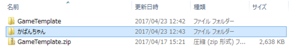

GameTemplateの使い方
目次
1 これは何
図1: GameTemplateでの作例
GameTemplateは、ゲーム製作を学ぶために用意されたフレームワーク(雛形)です。
- Windows と macOS どちらでも利用できます
- 用意されている機能は以下の通り
- 簡単な図形を描画する
- 画像を読み込んで描画する
- 音のファイルを読み込んで再生する
- キー入力・マウス入力を調べる
- 乱数を使う
Githubにて 最新版を公開 しています。
2 開発ツールの導入
2.1 macOSの場合
App Store から Xcode をダウンロード
2.2 Windowsの場合
- 公式サイト から Visual Studio Community 2017 のインストーラーをダウンロード
- ダウンロードしたインストーラー(vs_Community.exe)を実行
「C++によるゲーム開発」にチェックを入れる
右側「概要」の「C++によるゲーム開発」の中の「Windows8 SDKとUCRT SDK」という項目にチェックを入れる
- インストール！
3 作業の始め方
GameTemplateフォルダの複製を作る
複製したフォルダの名前を変える

複製したフォルダの中へ移動
- GameTemplate.slnを開く
ソリューションエクスプローラーからプロジェクトGameTemplateを開く
main.cppをダブルクリックするとテキストエディタにファイルの内容が表示される
4 プログラムのビルドと実行
- 「ビルド→ソリューションのビルド」
ビルドが完了したら「デバッグ→デバッグの開始」
図9: ビルドが完了すると出力に「1 正常終了」と出る
慣れてきたら
このボタンを押すと、必要な時だけビルドしてからプログラムを実行してくれます
5 図形の描画
5.1 点
drawPoint(0, 0, // 位置(x, y) 5, // 点の大きさ Color(1, 0, 0)); // 色(赤, 緑, 青)
5.2 線分
drawLine(0, 0, // 始点(x, y) 100, 100, // 終点(x, y) 2, // 線の太さ Color(1, 0, 1)); // 色(赤, 緑, 青)
5.3 長方形
drawBox(0, 0, // 位置(x, y) 80, 120, // 幅、高さ 1, // 線の太さ Color(0, 1, 0)); // 色(赤, 緑, 青)
drawFillBox(0, 0, // 位置(x, y) 80, 120, // 幅、高さ Color(0, 1, 0)); // 色(赤, 緑, 青)
5.4 円
drawCircle(0, 0, // 中心位置(x, y) 60, 80, // 横半径、縦半径 20, // 分割数 1, // 線の太さ Color(0, 0, 1)); // 色(赤, 緑, 青)
drawFillCircle(0, 0, // 中心位置(x, y) 60, 80, // 横半径、縦半径 20, // 分割数 Color(0, 0, 1)); // 色(赤, 緑, 青)
5.5 円弧
drawArc(0, 0, // 中心位置 120, 100, // 横半径、縦半径 0, 3.14, // 開始、終了角度(単位:ラジアン) 20, // 分割数 1, // 線の太さ Color(1, 1, 0)); // 色(赤, 緑, 青)
drawFillArc(0, 0, // 中心位置 120, 100, // 横半径、縦半径 0, 3.14, // 開始、終了角度(単位:ラジアン) 20, // 分割数 Color(1, 1, 0)); // 色(赤, 緑, 青)
5.6 三角形
drawTriangle(-60, 0, // 頂点１(x, y) 100, 80, // 頂点２(x, y) -60, -90, // 頂点３(x, y) 1, // 線の太さ Color(1, 0, 0)); // 色(赤, 緑, 青)
drawFillTriangle(-60, 0, // 頂点１(x, y) 100, 80, // 頂点２(x, y) -60, -90, // 頂点３(x, y) Color(1, 0, 0)); // 色(赤, 緑, 青)
5.7 四角形
drawQuad(-100, -100, // 頂点１(x, y) 100, -80, // 頂点２(x, y) 120, 100, // 頂点３(x, y) -150, 200, // 頂点４(x, y) 1, // 線の太さ Color(1, 1, 1)); // 色(赤, 緑, 青)
drawFillQuad(-100, -100, // 頂点１(x, y) 100, -80, // 頂点２(x, y) 120, 100, // 頂点３(x, y) -150, 200, // 頂点４(x, y) Color(1, 1, 1)); // 色(赤, 緑, 青)
6 キーとマウス
6.1 キー入力
if (env.isKeyPushed('A')) { // Aキーを押した瞬間ならここに制御が移る } if (env.isKeyPressing('A')) { // Aキーが押されていたらここに制御が移る } if (env.isKeyReleased(' ')) { // スペースキーが離された瞬間ならここに制御が移る } if (env.isKeyPushed(KEY_LEFT)) { // 矢印キーの「左」を押した瞬間ならここに制御が移る }
| KEY_ESC | ESCキー |
| KEY_ENTER | Enterキー |
| KEY_TAB | TABキー |
| KEY_RIGHT | 右矢印キー |
| KEY_LEFT | 左矢印キー |
| KEY_DOWN | 下矢印キー |
| KEY_UP | 上矢印キー |
| KEY_LEFT_SHIFT | 左Shiftキー |
| KEY_RIGHT_SHIFT | 右Shiftキー |
| KEY_LEFT_CONTROL | 左Ctrlキー |
| KEY_RIGHT_CONTROL | 右Ctrlキー |
| KEY_LEFT_ALT | 左Altキー |
| KEY_RIGHT_ALT | 右Altキー |
6.2 マウスボタン入力
if (env.isButtonPushed(Mouse::LEFT)) { // マウスの左ボタンを押した瞬間ならここに制御が移る } if (env.isButtonPressing(Mouse::RIGHT)) { // マウスの右ボタンが押されていたらここに制御が移る } if (env.isButtonReleased(Mouse::LEFT)) { // マウスの左ボタンが離された瞬間ならここに制御が移る }
6.3 マウスカーソル
// マウスのカーソル位置を変数にコピー Vec2f pos = env.mousePosition(); // マウスのカーソル位置を終点にして線を引く drawLine(0, 0, pos.x(), pos.y(), 1, Color(1, 0, 0));
// マウスカーソル位置を(0, 0)へ移動 env.mousePosition(Vec2f(0, 0));
// マウスカーソルOFF env.mouseCursor(false); // マウスカーソルON env.mouseCursor(true);
7 乱数
// 乱数を作る変数を用意 Random dice; // 0~9のどれかの整数を取得 int a = dice(10); // -2~8のどれかの整数を取得 int b = dice(-2, 8); // 0.0f~1.0fのどれかの小数を取得 float c = dice(); // 2.0f~5.0fのどれかの小数を取得 float d = dice(2.0f, 5.0f);
8 画像
- JPEG、PNG、BMP、GIF形式の画像が使えます
- 画像の幅と高さは、どちらも２のべき乗である必要があります
- 幅16ピクセル・高さ32ピクセル や 幅128ピクセル・高さ512ピクセル など
- 最大2048ピクセルまで
- 画像ファイルをresフォルダ以下に置く
// 画像をファイルから読み込む Texture image("res/hoge.png"); // 画像の拡大縮小時のフィルタリングを変更 // falseで無効、trueで有効 image.enableFilter(false); // 画像の縦横の繰り返しを変更 // 横方向、縦方向を個別に指定 image.repeat(false, false); // 画像を描画 drawTextureBox(0, 0, // 表示位置(x, y) 256, 512, // 表示幅・高さ 0, 0, // 画像切り抜き位置(x, y) 128, 256, // 画像切り抜き幅・高さ image); // 画像
9 サウンド
- WAV形式のサウンドが使えます
- 量子化ビット数16である必要があります
- サウンドファイルをresフォルダ以下に置く
Windows上でサウンド形式を変換するソフト Audacity を配布フォルダに置いておきます。macOSの場合は App Storeから Universal Audio Converter をダウンロードして使ってください
// サウンドをファイルから読み込む Media sound("res/hoge.wav"); // 再生 sound.play(); // 停止 sound.stop(); // 一時停止(この後再生すると、続きからになる) sound.pause(); // 音量変更(0.0~1.0) sound.gain(0.5); // 再生速度変更(0.0~) sound.pitch(1.5); // ループ trueでON falseでOFF sound.looping(false);
10 ゲームパッド
- USBで接続するタイプなら概ね扱えます
- ボタンの種類、アナログ入力の数はWindowsのデバイス設定から確認してください
// ゲームパッドの接続数を調べる。0なら接続なし int num = env.numGamePad(); // メインループ while (env.isOpen()) { env.begin(); // ゲームパッド0番の情報をゲット GamePad game_pad = env.gamePad(0); // ゲームパッドのボタン数 int button_num = game_pad.buttons(); // ゲームパッドのアナログ入力の軸の数 int axis_num = game_pad.axes(); if (game_pad.isButtonPressing(0)) { // ゲームパッドの0番ボタンが押されている } if (game_pad.isButtonPushed(1)) { // ゲームパッドの1番ボタンが押された瞬間 } if (game_pad.isButtonReleased(2)) { // ゲームパッドの2番ボタンが離された瞬間 } // ゲームパッドのアナログ入力1番の状態 // だいたい -1.0〜1.0 の範囲の値 float x_axis = game_pad.axis(1); env.end(); } // キー・マウス・ゲームパッドの入力情報をクリア env.flushInput();
11 文字表示
- TTF形式のフォントを使います
// フォントを使う準備 Font font("res/hoge.ttf"); // 表示時のサイズを決める font.size(60); // 文字列を表示 font.draw(u8"ほげ", // 表示する文字列 Vec2f(0, 0), // 表示位置 Color(1, 1, 1)); // 表示色 // 画面に文字列を表示する時の予想表示サイズを計算する Vec2f size = font.drawSize(u8"ほげ");